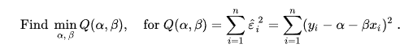

A gépi tanulás a mesterséges inteligencia egyik ága,
olyan rendszerekkel foglalkoznak, melyek tanulni képesek, azaz
tapasztalatokból tudást generálnak. A gyakorlatban ez annyit
tesz,
hogy a rendszer példa adatokból képes szabályszerűségeket
felismerni.Ezeket a szabályszerűségeket felhsználva pedig képes
új adatokból is helyes következtetéseket levonni.
Egy egyszerű példa:
Tételezzük fel, hogy kutatást végzünk egy egyetemnek.Az egyetem
kíváncsi lenne arra, hogy átlagosan hogy fog teljesíteni egy
hallgató egy adot tárgyból, ha tudunk róla különböző adatokat.
Hagyományos programozási módszerekkel nem sokra mennénk egy
ilyen feladatnál.Pontosan ezért találták ki a gépi tanulást. A
megoldáshoz lineáris regressziót fogunk használni.
Mi az a lineáris regresszió?
Ha most kíváncsiságból rákeres a lineáris regresszióra ehhez
hasonló csodákat találhat:

Szerencsére nekünk most a részletekkel nem kellesz
foglalkoznunk, ezért elég ha csak nagyon felületesen megnézzük,
hogy mit is jelent.
"a lineáris regresszió egy olyan paraméteres regressziós modell,
mely feltételezi a magyarázó- (X) és a magyarázott (y) változó
közti (paramétereiben) lineáris kapcsolatot"
Lineáris regresszió példa
A képen a kék pontok mutatják az adatokat, amelyből a programunk
"tanul" , a "tanulás" alatt pedig azt értjük, hogy megkeresi azt
az egyenest (a képen pirossal jelölve) amely a legjobban
illeszkedik az adatokhoz.Így amikor egy új adatot adunk a
programnak, az egyenes egyenlete segítségével megtippeli, hogy
milyen eredményre számíthatunk.
Az lesz a különbség a fenti kép és a mi példánk között, hogy a
fenti képen lévő gráf 2 különböző adatot használ (x, y) ezért
lehetséges 2 dimenziós képernyőn megjeleníteni, de a mi példánk
5 adatot fog amit sajnos csak 5 dimenziós képernyőn tudnánk
illusztrálni, de a lényeg ugyan az, a matekkal meg nem kellesz
foglalkoznunk.
Diákok Adatai
Különböző adatok, amikből az MI tanulni fog.
1.oszlop:Adat neve
2.oszlop:Adat
Adat neve:
Adat:
school;
"GP";
sex;
"F";
age;
18;
address;
"U";
famsize;
"GT3";
Pstatus;
"A";
Pstatus;
Google Maps
Medu;
4;
Fedu;
4;
Mjob;
"at_home";
Fjob;
"teacher";
reason;
"course";
guardian;
"mother";
traveltime;
2;
studytime;
2;
failures;
0;
schoolsup;
"yes";
famsup;
"no";
paid;
"no";
activities;
"no";
nursery;
"yes";
higher;
"yes";
internet;
"no";
romantic;
"no";
famrel;
"4";
freetime;
"3";
goout;
"4";
Dalc;
"1";
Walc;
"1";
health;
"3";
absences;
"6";
G1;
"5";
G2;
"6";
G3;
"6";
Majd 400 diák adatai álnak a rendelkezésünkre, ami az egyszerű példánk
szemléltetésére bőven elegendő.
2.lépés
Nyissunk egy Python file-t amibe importáljuk az alábbi
modulokat(ha nincsenek ezek a modulok telepítve akkor telepítse
őket, javaslatom hogy
nyissa meg az anaconda weboldalt, ami lényegesen megkönyíti a modulok telepítését.
import pandas as pd
import numpy as np
import sklearn
from sklearn import linear_model
3.lépés
Töltsük be az adatokat.Ha az adatok "student-mat.csv"
néven szerepelnek ugyanabban a könyvtárban ahol a Python
scriptünk van Akkor a:
data = pd.read_csv("student-mat.csv", sep=";")
,sorral tudjuk ezt megtenni. A sep=";" paraméterrel
jelezzük,hogy az adatok a ";" karakterrel vannak elválasztva
egymástól.
Mivel nekünk nincs szükségünk csak azokra az adatokra, amik
szerintünk befolyásolják a végső jegyet a
data = data[["G1", "G2", "G3", "studytime", "failures", "absences"]]
,soral kiválasztjuk a következő adatokat:
első félévben szerzet jegy
második félévben szerzet jegy
végső jegy
mennyi időt tanult a diák
hányszor bukott meg eddig
hány óráról hiányzott
4.lépés
Osszuk fel az adatokat két részre. Az adatok egyik részén fog a
modellünk tanulni.A másik részén pedig leteszteljük majd a
modellünket.Ezt azért csináljuk, mert olyan eset is
bekövetkezhet, hogy a modelünk "túl szakosodik" vagyis azokra az
adatoknál amin tanul nagyon jó eredményeket ér el, de új
adatokon nem.
predict = "G3"
X = np.array(data.drop([predict], 1))
Y = np.array(data[predict])
x_train, x_test, y_train, y_test =
sklearn.model_selection.train_test_split(X, Y, test_size=0.1)
predict = "G3"-mal azt mondtuk, hogy ennek az adatnak a
tippelésére tanítjuk meg a modellünket. ( G3 a diák végső jegyét
jelöli)
5.lépés
A következő lépésben a sklearn modul segítségével megalkossuk a
modellünket.
linear = linear_model.LinearRegression()
linear.fit(x_train, y_train)
majd leteszteljük a moddelünket az általunk félre tett teszt
adatunkon, az elért pontosságot pedig kinyomtatjuk:
acc = linear.score(x_test, y_test)
print(acc)
Kimenet:
0.879873221125009
Wow....vagyis egy pár sor kóddal képesek voltunk 87 százalék
pontosságal megtippelni a diákok végső jegyét.